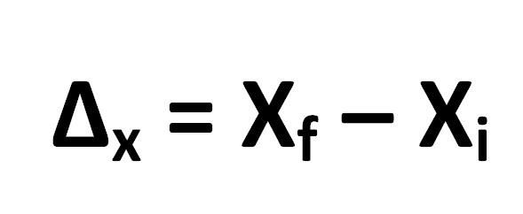
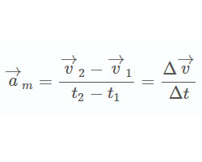
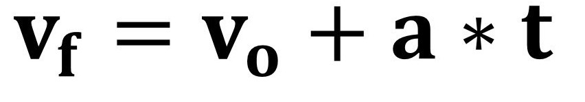
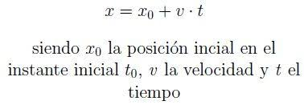
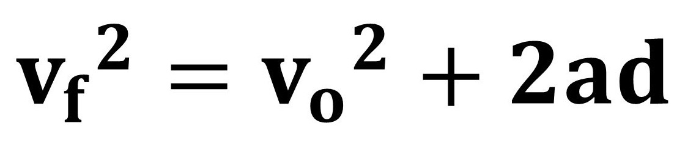
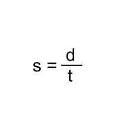

El movimiento es un estado en el que los cuerpos cambian de posición, para encontrar donde sse encuentra necesitamos un punto en x y en y, partiendo desde el origen, me llevo en el corazón que el desplazamiento es un vector y puede ser positivo o negativo, y la distancia siempre es positiva y no es vectorial
Desplazamiento

Mide cuanto cambio la posicion de un objeto en dos instantes
Velocidad Promedio

Es el ritmo en el cambio de posición
Aceleración media

Es el cambio de velocidad dividido por el intervalo de tiempo
Movimiento con velocidad constante

Movimiento con velocidad constante

Movimiento con velocidad constante

Velocidad instantaena

Aceleración instantanea

Rapidez promedio
